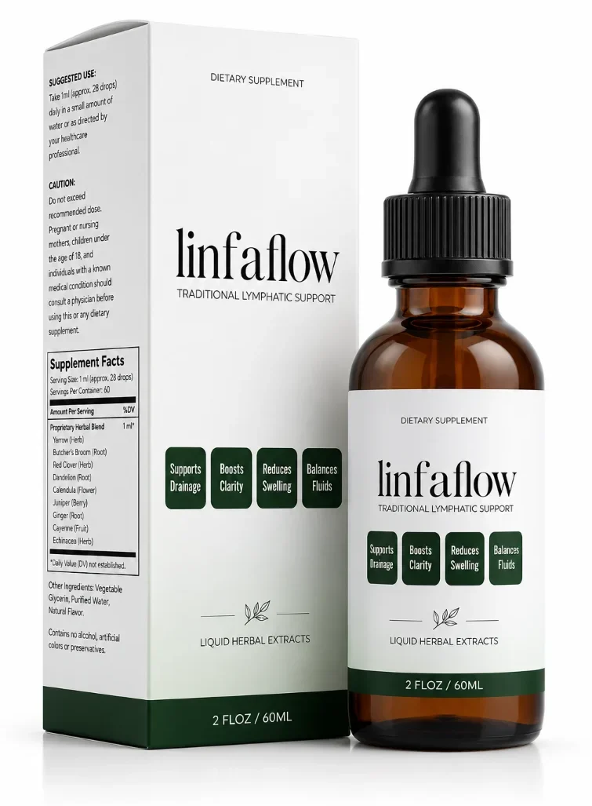

Ohio mom almost
killed by swollen legs
(don't ignore this sign)
If you have any swelling at all in your legs, ankles, or feet—this will be the most life-saving message you'll ever read.


Jane was five minutes from dead.
That's what Dr. Michael Zane told her when she woke up in a hospital bed.
For Jane, it had started as just another night. "I was cooking spaghetti for my family. My legs felt so heavy and tight that day. Then suddenly I couldn't breathe. My heart started pounding so hard I could hear it."
Then her voice breaks. "I remember missing the counter. Then my son crying over me. My husband on his knees, screaming my name while he called 911."
Dr. Zane explains that swollen legs, ankles, or even puffy feet mean the veins are damaged — and damaged veins form blood clots.
These clots travel from the legs to the lungs, where they can clog a critical artery. It happens in seconds.
The warning sign?

Dr. Zane put it plainly: "The clot gives no warning. The swelling is the warning."
In fact, the American Heart Association reports up to 100,000 Americans die this way every year.
The vitamin to stop swelling
According to Dr. Zane, "For most people, swelling is just a lack of this vitamin. Once patients start taking it, their legs, ankles, and feet go back to normal."
In case after case, patients taking this vitamin are watching the swelling disappear in 4 to 8 weeks.
- The tight, puffy feeling in the feet and ankles eases in seven days or less.
- The heavy, aching legs feel light again by week two or three.
- Their shoes and socks fit comfortably again in three to five weeks.
- And in most cases, the swelling disappears within four to eight weeks.
This vitamin works so well because it repairs the very root cause of swelling Harvard doctors recently found.
The hidden cause of swollen legs
It comes down to a condition Harvard doctors call “leaky veins.”
In one study, doctors examined the veins of women with swollen legs under a strong microscope. When they zoomed in, they saw something disturbing.
The women’s veins had tiny holes.
Fluid from the blood was leaking out — and pooling inside the legs, ankles, and feet.
Just like a leaky pipe flooding the floor.
Today, leading medical institutions — including Harvard, Johns Hopkins, and the Mayo Clinic — confirm leaky vessels are the root cause of swollen legs.

And here’s why it’s such a problem.
Your body has around 60,000 miles of veins, enough to wrap the Earth twice.
Now picture the veins in your legs leaking. Day and night.
Scientists even captured it on camera:

In fact, the U.S. National Library of Medicine says the human body can hide up to 3 liters of trapped fluid (nearly a full gallon) before the swelling is even visible.
Which means by the time you notice it — heavy legs, sock marks, tight shoes — the legs, ankles, and feet are already flooded.
Why the veins begin to leak
For most women, it’s not a single thing — it’s a few, quietly building over the years. Here are the most common:
Menopause and hormones
Estrogen helps keep your vein walls firm. As it drops during menopause, the walls weaken and stretch — until tiny holes open and fluid begins to leak out.
Extra weight
Every extra pound adds pressure inside your leg veins. Over time, that constant push wears down the walls, until fluid starts to escape.
Blood pressure medication
Common pills like Norvasc (amlodipine) work by widening your blood vessels to lower pressure. But that same effect can let fluid seep into your lower legs.
Age
Your veins are under pressure every day, for decades. Eventually the walls thin, tiny holes open, and fluid begins to leak out into your legs.
That’s why the usual advice never works. Elevate your feet, wear compression socks, cut salt — it just moves the fluid around for a few hours, while the veins keep leaking all day. So by evening, the swelling is back.
Signs your veins are leaking
Legs & ankles
- Ankles swell by evening
- Heavy legs by evening
- Sock marks
- Legs feel tight
Face & hands
- Puffy face in the morning
- Puffy eyelids in the morning
- Rings feel tight on your fingers
Nobel Prize winner discovered a vitamin that eliminates swelling
The human body needs vitamins to work.
Your heart needs potassium to beat.
Your brain needs vitamin B to think.
Your skin needs vitamin C to stay firm.
Your veins need the right vitamin too.
It’s called Vitamin P.
It was discovered by Nobel Prize–winning scientist Dr. Albert Szent-Györgyi. He named it “P” for permeability — because it seals the tiny leaks and makes the veins strong so they stop letting fluid escape into your legs in the first place.
Unlike compression socks and water pills, which just push fluid around for a few hours, Vitamin P repairs the leak itself.
There was just one problem: At the time, Vitamin P was rare.
Then decades later, scientists found one of the world’s richest sources of Vitamin P — a deep-red extract from the bark of French pine trees.
In clinical studies, women taking French pine bark extract report no more heavy legs and no more tight shoes in the first three weeks.
After six weeks, 92% of women say the swelling and pain while walking are gone. They just stop noticing their legs.
How vitamin P stops the swelling
Your vein walls are held firm by collagen — the same protein that helps keep your skin tight.
As you age, that collagen weakens. Your vein walls turn fragile. Tiny holes open, and fluid start leaking out of your veins and pooling in your ankles, calves, and feet.
Vitamin P goes to work on that collagen, helping the walls pull back firm and tight. The holes in the veins close. And fluid stays inside the vein instead of leaking into your legs.
There are enzymes in your body that slowly eat away at collagen, opening new holes in the walls over time.
Vitamin P blocks these enzymes. No new holes. No more leaking.
Harvard scientists studied
vitamin P with 38,000 women
In a clinical trial, women with swelling in their legs, ankles, and feet took Vitamin P — from the bark of French pine trees — for 8 weeks.
Here’s what changed:
- Week 1Body starts flushing fluid
Women reported 2 or 3 extra bathroom trips in the first days. That’s a sign excess water is finally leaving the body.
- Week 2Feet and ankles are back
Sock marks disappeared. Tight shoes slipped on easily. The evening leg heaviness was fading.
- Week 3Belly and face are slimmer
With less fluid pooling, faces looked visibly slimmer. Waistlines reduced by 1 to 2 inches. On average, women lost 4 to 6 pounds.
- Week 4No more heavy legs at night
After four weeks, women reported no more heaviness in their legs. They slept all night without discomfort. Walking was normal again.
- Week 8The swelling is gone
Participants’ legs, ankles and feet were normal again. There was no signal of swelling or tight skin. No pain was reported after 8 weeks.
“Honestly, my ankles haven’t looked this good in years. By the end of the day they used to be so tight and swollen. Now they just don’t do that anymore. I’m really happy with it.”

“My legs feel so much lighter. I actually stopped wearing my compression socks a few weeks back and didn’t even realize it. It’s been a nice surprise.”

“That heavy, aching feeling I’d get by evening? It’s gone. I can be on my feet all day now and I don’t dread it anymore. Made a real difference for me.”

Beyond slimmer legs
When the swelling drains away, the relief isn’t only in the legs. Many women say their whole body feels lighter — even more alive.
- More energy that lasts all dayBetter sleep and less daily strain leave the body more rested.
- Brain fog disappearsWith no more inflammation, the brain restores focus and mental clarity.
- Belly visibly flatterWith no excess fluid, the waist gets smaller, bloating fades, and clothes fit the way they used to.
- Skin looks youngerFace puffiness fades, eye bags shrink, cheekbones reappear, jawline comes back.
- Joint pain fadesWith no more pressure in the joints, stairs feel easier, knees stop creaking, mornings aren’t stiff anymore.
Where to get vitamin P today
Today Linfaflow is the only U.S. brand offering the original Vitamin P formula, made from French Pine Bark extract.
Linfaflow is made right here in the U.S., in a botanical lab known among doctors for its high-purity formulas — with every batch tested in an FDA-registered facility.
To keep it affordable and make sure you get the real formula, Linfaflow is not sold on Amazon, Walmart, or in drugstores. It’s available only through the official website. Tap below to get your Linfaflow.
At a Glance
Linfaflow

GMP-certified
The guarantee
Try Linfaflow for 60 days risk-free. If your legs, ankles and feet aren’t back to normal, you will receive a prompt, full refund — no questions asked. And you keep the bottles.
For a full refund, call +1 (800) 390-6035 or email support@linfaflow.com.
How to get 70% off today
To introduce Linfaflow to more women, they’re offering readers an exclusive 70% off. The offer closes .
In their words
What women who use Linfaflow told us
We spoke with several longtime Linfaflow users to hear, in their own words, how it has gone for them. Their experiences varied, but the same themes came up again and again. Here is what three of them shared.
“I’m on my feet all day behind the chair. By closing time my ankles were so swollen my socks left deep rings. Within the first week, I already felt the tightness starting to ease. By week three I could see my ankle bones again. I actually stopped and stared in the mirror. My shoes slide right on in the morning now. I keep telling the girls at the salon about it.”
“I’ll be honest, at first I wasn’t sure I’d feel much. But by the end of the first week my legs already felt lighter at night. Then around week four I stopped propping them up on two pillows just to sleep. I don’t even think about it anymore. If you’re the type to give up early, don’t. Stick with it. I’m so glad I did.”

“My daughter got married in June, and I’d been dreading it for months. I pictured myself sitting the whole time while everyone else danced. I’d been taking the drops since early spring. I stood through the entire ceremony. I danced at the reception. And I woke up the next morning with legs that felt like my own again. I cried a little, honestly. That day meant everything to me.”

Comments
8How long does delivery usually take? I really need these, my ankles are so swollen again 😩
Hi Sarah! I'm near Chicago and mine arrived in 3 business days. Super fast!
I bought mine last week at full price and now it's 50% off, kind of annoying 😅 But honestly still worth every penny. After two weeks my legs finally don't feel like lead weights anymore!
Does this work if you sit at a desk all day? My ankles are always so swollen by evening 😩
Lena yes!! I'm in sales, on my feet 8 hours a day. Since I started Linfaflow my shoes fit perfectly again at night. Can't believe I waited so long honestly
Started three weeks ago and my husband actually asked me "what are you doing differently? Your legs look so much better." Made me so happy 😊
How quickly does the water drainage actually kick in?
Charlotte for me it only took 3 days! I had to go to the bathroom more often but the stiffness in my calves disappeared almost right away. Honestly shocked